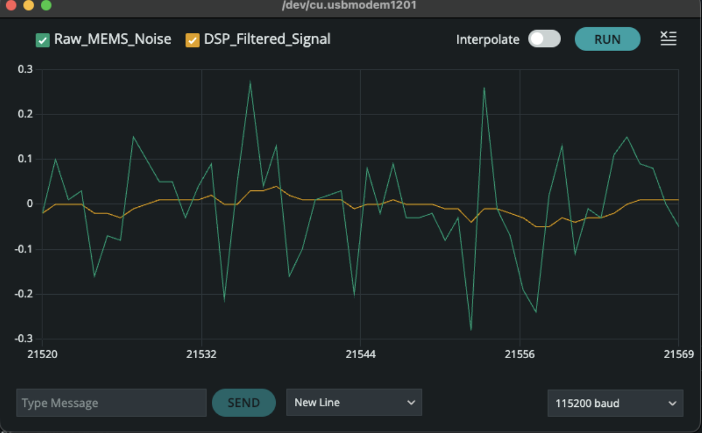
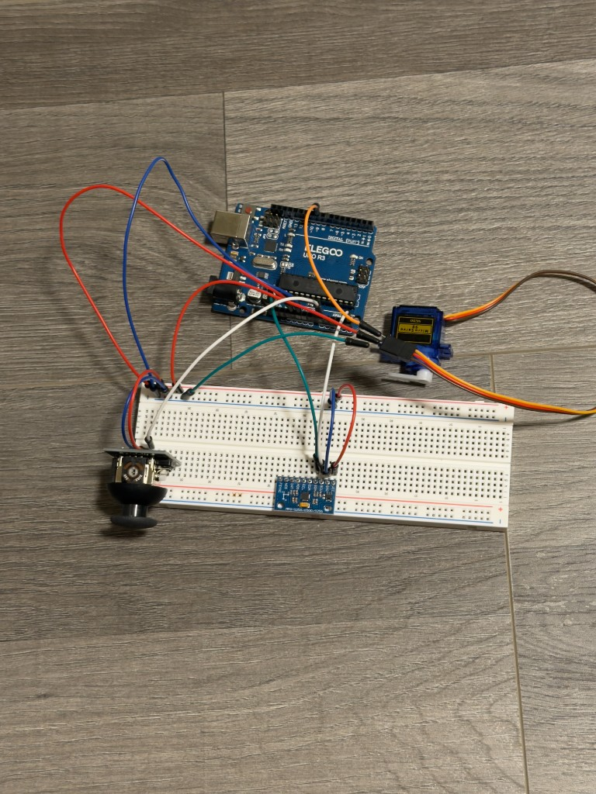

Steering-Actuator Latency Test Bench
Hardware-in-the-loop latency validation of steer-by-wire control and sensor fusion.
Objective
I want to build an F1-style RC car from scratch. Not kit-built, actually designed and assembled. One of the systems I want on it is active stability control, something that detects when the rear is stepping out and corrects before the driver loses it. But before I could think about correction, I needed to know whether the components I had could even keep up with real-time demands. This bench was the first step. It measures the time between a steering input and the moment the gyroscope detects the physical response. If that number stays under 50 ms, the setup is fast enough to build on. If not, I need different hardware. The answer was under 50 ms.
System architecture
- Reference input: joystick (analog voltage) representing driver or flight-computer intent.
- Controller: Arduino Uno running C++ firmware for signal mapping, filtering, and telemetry.
- Plant (actuator): SG90 servo motor representing a steering rack or gimbal.
- Feedback sensor: MPU6050 MEMS gyroscope measuring yaw rate.
- Telemetry: high-speed UART (115200 baud) streaming data to a host PC for analysis.
Technical implementation
Hardware integration
The Arduino drives a PWM servo while polling the MPU6050 via I²C at ~50 Hz, forming a synchronous control loop. This lets me log how quickly the actuator and sensor respond to step changes in joystick command.
Signal processing (firmware)
A cheap MEMS gyroscope is noisy enough to make latency measurements unreliable if you use the raw data directly. Before I could trust the numbers, I needed to clean the signal without adding delay of its own. In firmware I implemented two things:
- Startup calibration: sample the gyro 200 times at rest to estimate and subtract zero-rate bias.
- Exponential moving average (EMA): low-pass filter with α = 0.2 to smooth high-frequency jitter without adding much latency.
Figures & data
Figure 1: Telemetry Analysis (Step Response)

Figure 2: Hardware Test Bench

Firmware highlight
EMA filter implementation for cleaning up gyro data with minimal latency penalty:
// Signal conditioning: reduce MEMS noise without heavy latency
void processTelemetry() {
float rawRate = readGyroDS();
// Alpha (0.2) balances latency vs. smoothness
filteredRate = (alpha * rawRate) + ((1.0f - alpha) * filteredRate);
sendTelemetry(filteredRate);
}Engineering impact & skills
The part that took the longest to get right was the filter. Getting alpha tuned to 0.2 was not a guess — it came from watching the step response graph and adjusting until the filtered line tracked the raw signal closely without lagging behind it. Too low and the filter added its own delay. Too high and the noise came back. The graph is what finally told me it was working. Seeing the orange line settle into a clean shape while the green line spiked around it was the moment the whole thing clicked.
The result was under 50 ms end-to-end. That confirms the setup can keep up with what a real-time correction loop would demand. This project did not correct for anything. It measured whether correction is possible with these components, and confirmed that it is. The next step is closing the loop, feeding gyroscope output back into the steering command so the car responds to what it is actually doing rather than just what the driver is asking for. That is where the F1 car build goes from here. This bench gave me the confidence to keep going.
Final result
The video shows the telemetry in real time. Raw gyro data on one line, filtered output on the other, latency confirmed under 50 ms. First step done.